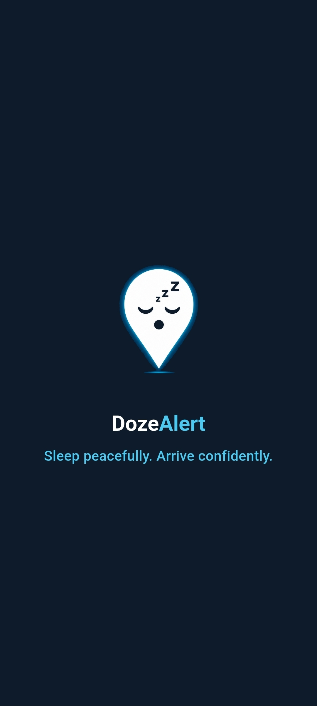
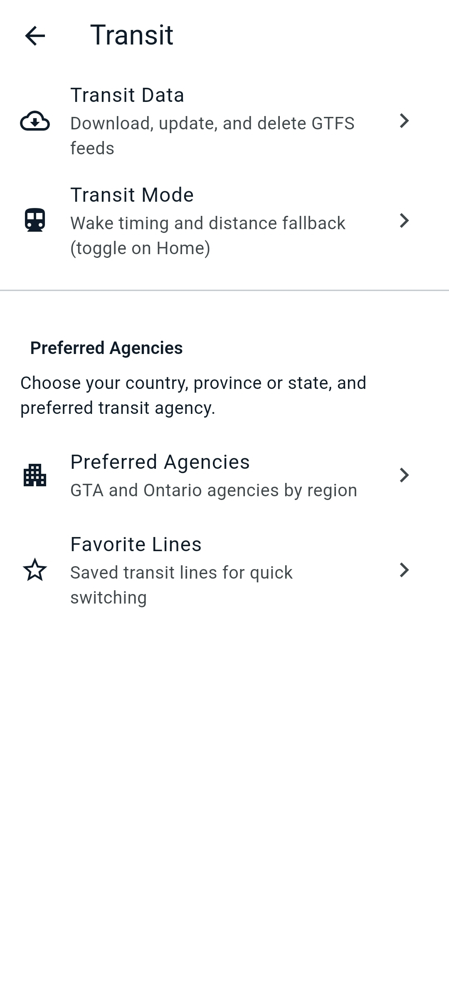
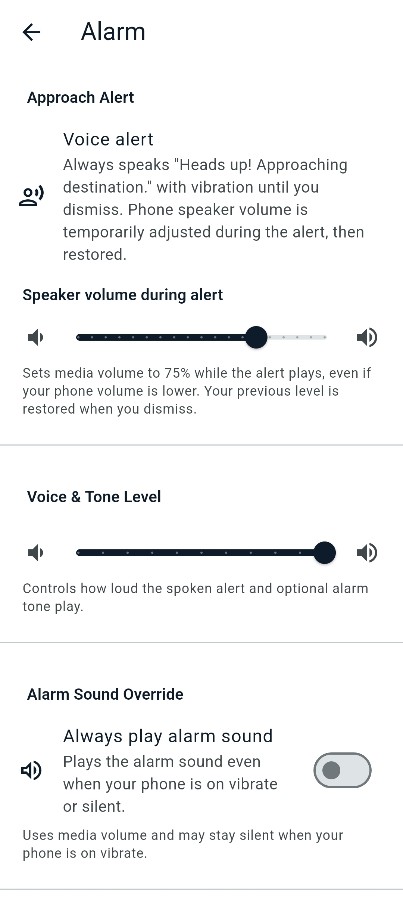
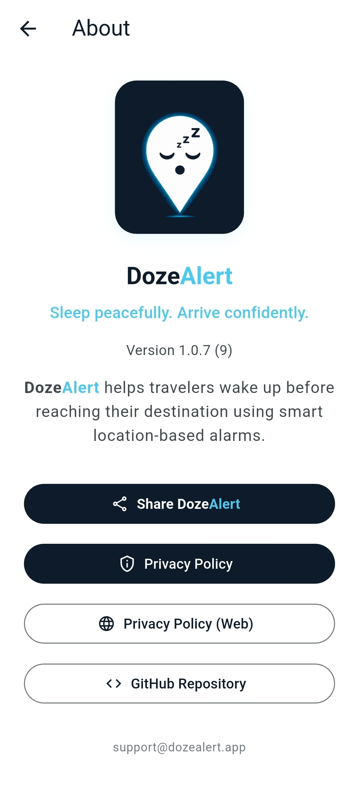

See DozeAlert in action
Sleep peacefully. Arrive confidently.
DozeAlert is a commute alarm for riders who want to rest without missing their stop. Set a destination, start monitoring, and get a reliable wake-up on GO Transit, TTC, and other agencies with offline GTFS data.
Your commute alarm
A simple home screen keeps destination, monitoring, and Transit Mode in one place. No account required — trip data stays on your device.

Wake up before your stop
DozeAlert monitors your trip in the background and alerts you as you approach your destination — on a train, bus, or any ride where GPS works.

Home screen
Pick a stop, choose wake distance or stop count, and tap Start when you are ready. Transit Mode can wake you by stops remaining; otherwise DozeAlert uses your wake radius.
- Clear idle vs. monitoring status
- Transit Mode toggle on Home
- Guided app tour for first-time users
Set a destination in seconds
Search the map, pick a GTFS stop on your line, switch a saved line, or reuse a recent or favorite destination.

Five ways to pick your stop
Open Set destination from Home to search on the map, filter stops on your route, jump to a favorite, switch a saved line, or pick from recents.

Choose agency & line
Filter routes by bus or train, then search by route number or name. Your selection shows on Home as the full line label — for example GO Transit - LW - Lakeshore West.

Pick a stop on your line
Search and filter stops on your selected route, or browse all routes at a station. GTFS data powers accurate offline stop lists and Transit Mode progress.

Your stop, ready to go
Once a stop is set, Home shows your destination and transit line at a glance. Tap Start to begin monitoring and see stop-by-stop progress when Transit Mode is on.
Saved favorites & quick restarts
Stations and lines you use often stay one tap away. Recent destinations appear automatically so you can restart a commute without re-entering details.

Saved tab
Recent destinations, favorite stops, and favorite lines live on the Saved tab. Long lists stay compact — show a few entries, then expand to see the rest. Tap play on any item to set it and jump back to Home.
- Favorite destinations with agency badges
- Favorite lines for quick switching
- Trip history and missed trips

Transit Mode on Home
Enable Transit Mode to wake by stops remaining instead of straight-line distance. When you are not near a route, DozeAlert falls back to your wake radius automatically.
Built for transit riders
Download agency GTFS feeds for offline stop search. Set your preferred agency, line, and wake timing in Settings.

Transit settings
Download and manage GTFS feeds, configure Transit Mode wake timing, set preferred agencies by region, and manage favorite lines for quick switching.

Preferred agency & line
Choose country, province, agency, and default line. Filter by vehicle type and search routes loaded from GTFS — defaults work well for GTA commuters and can be changed anytime.
Reliable wake alerts
Voice, vibration, and optional alarm tone wake you before you miss your stop. Volume is boosted during the alert, then restored when you dismiss.

Approach alerts
A spoken “Heads up! Approaching destination.” plays with vibration until you dismiss. Adjust speaker volume during the alert and control voice and tone levels separately.
Settings you control
Theme, location accuracy, wake radius, transit preferences, and alarms live in one hub. No ads, no data sale.

Organized settings
Adjust appearance, replay the guided Home tour, manage transit data, fine-tune location and battery guidance, and configure alarms from a simple menu.

About & open data
Read our story, review transit data licenses, and check the app version. Share DozeAlert or reach us at support@dozealert.app.

Share & support
Trip data stays on your device. Open the privacy policy in-app or on the web, and share the app with fellow commuters.
Ready to try it?
Download DozeAlert for Android and set your first destination in under a minute.
Download APKAlso search DozeAlert on Google Play when available in your region.